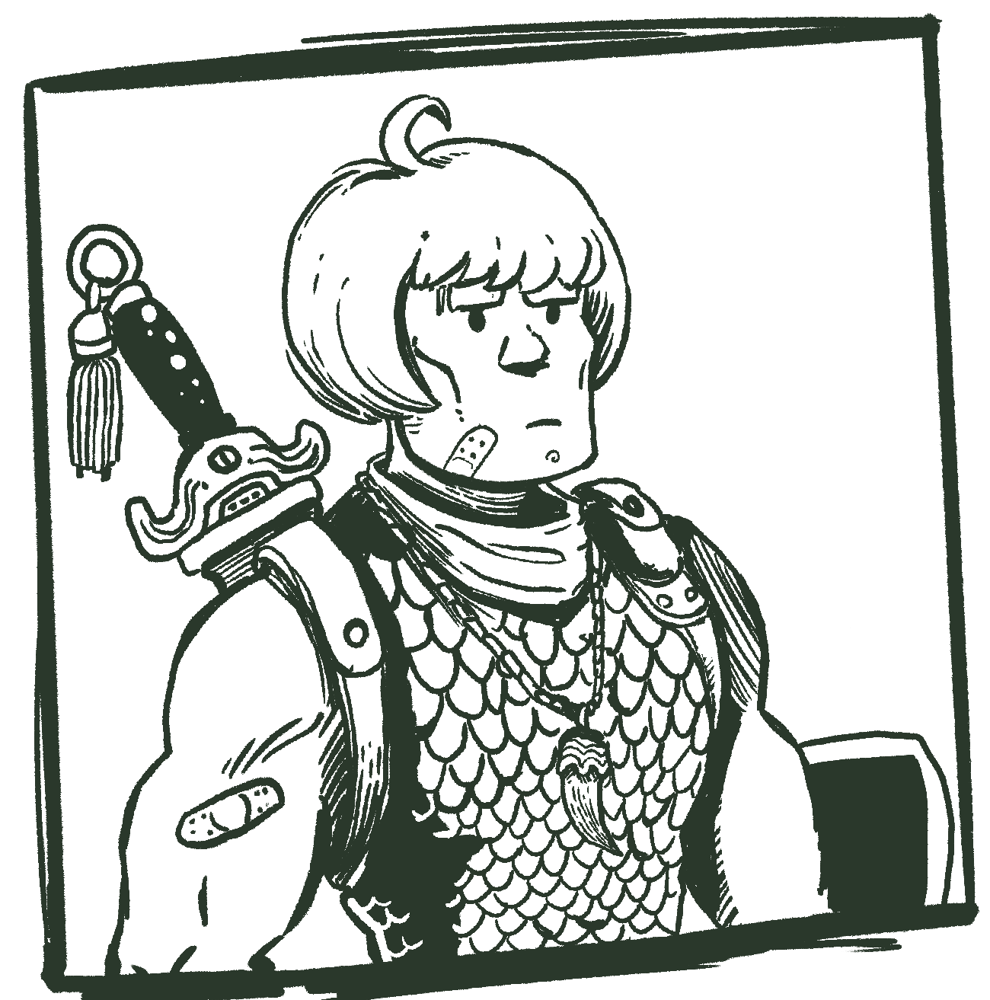
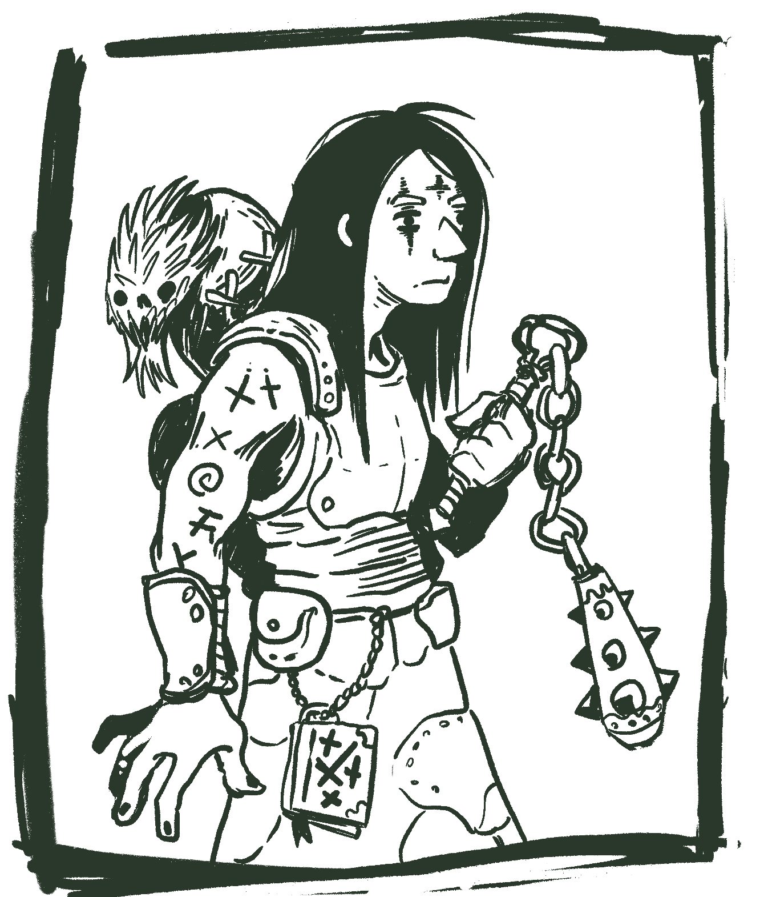

version 0.1

This is a very very early work in progress, it's playable, but I put it online mostly as a proof of concept and for feedback.
Welcome
Dead Weight takes place in a low-fantasy world, it's very grim and dark but doesn't take itself too seriously.
It should be clear that the player characters are no heroes; they are dead weights, outcasts and treasure hunters with little to lose. They delve deep into long forsaken places, attempting to save enough silver to leave Blacksalt Island for solace and better days elsewhere.
This system has a strong structure to it, and focus heavily on dungeon crawling. While exploring the catacombs and dungeons, the characters must struggle with not only the horrors lurking there, but also their fatigue, stress, and the gradual decay of the valuable resources they bring.
The goal of Dead Weight is to capture the classic feeling of dungeon crawling tabletop RPGs and board games. It is inspired by many others, borrowing a lot from Blades in the Dark, HeroQuest (the boardgame), The Black Hack and Torchbearer. Don't forget to check our license,you are free to hack, copy, change and even sell works derivative from this system, as long you give proper attribution.
This game was designed and illustrated by me, Pedro Medeiros and if you like what I'm doing, you can consider supporting me on Patreon.
Blacksalt Island

It's a dreadful place they call Blacksalt. A once-great kingdom, Blacksalt Island has been ruined by war and plague long, long ago. It was forgotten for many years, but was recently rediscovered. Treasures and arcane relics found in the tombs sparked a "gold rush" of sorts, with people far and wide venturing there to earn some silver.
Now, the island is divided into dungeoneering guilds, each of which owns certain ruins. They allow adventurers to explore them and even assist them with supplies, as long as they receive a cut of any treasure found.
Blacksalt island is a gigantic place, with multiple cities on the shore, hastily built for this exploration venture and a few villages on its core. Of the original inhabitants very little is left, but some very small settlements still date back to the time of the old kings.
The ruins are filled with the undead, and the newcomers seem to only add to their numbers. Humanoid creatures also live there, mostly hidden in the shadows and in the forests, like the child stealing goblins.
Unlike many fantasy worlds your character is no hero. Quite on the contrary, you are someone at the end of their line. Maybe your days of glory are long gone and mostly likely they never came. In one way or another, you don't have much to lose - and that's what brings most people to Blacksalt Island.
You arrived in the island hoping to find something, maybe treasure, maybe some lost artifact, maybe a glorious death.
What you will need
Dead Weight is designed with both online and offline play in mind. This rule book has links and a structure optimized for reading online and on mobile, so it's easily accessible to all players. This game is best played with at least 4 players and no more than 6, including the game master.
If you never played a tabletop RPG before here is a good introduction of what it is.
For online play you will need:
- Some voice and text chatting software like Discord or similar.
- A robust online dice rolling software that allows rerolling, like DeadDice a dice rolling app I made just for this system.
- A copy of the character sheet for each player, digital or printed, to the player preference.
For playing offline you will need:
- Pen and paper for everyone.
- A copy of the character sheet for each player, digital or printed, to the player preference.
- As many 6-sided dices as you can. Ideally 5 per player. Can be played with fewer dice, but it slows down the game.
- Coins, beans, anything that can be used as markers. There are 3 types of markers, stun, shield and dodge.
- Miniatures or some kind of pawns. Each player will require one and the GM will require some for the enemies. They should be easily identifiable.
The Basics
Dead Weight is all about dungeon crawling and delving into dark and terrible places. Let's go over the basics of the system core concepts before anything, after this I recommend that you try to create your first character.
Game Master
One of the players is the game master, in this book we will also abbreviate that to GM. The GM is like a narrator and plays with all the non-player characters, guides the outcomes of the player actions and creates the details of the world.
The game master has game master sheet, just like the players.
Players
Every one else is considered a player. Players will each have a character they will roleplay, they will choose the actions of that character and try to keep them alive and to move towards that characters objectives.
Adventurers
Characters in Dead Weight are people who either lost everything or didn't ever had anything to begin with. Misfits adventurers willing to risk going into the deep vaults of the Blacksalt Island to find precious treasures and artifacts while risking their lives and their sanity.
Characters will level up between sessions and eventually retire, if everything goes well. Characters can also find an untimely end by something horrible in the depths of the island.
In this book we will often say adventurers when referring specifically to the player characters.
Game Session
This game played in sessions, that can last at least one hour and up to 3 hours, ideally. Each game session is structured in 2 distinct states, the expedition and the interlude, which is basically delving into a terrible place or recovering and making plans for the next expedition. The players may choose from a list of actions depending on which phase the game currently is.
Ok, how do I start?
First, decide who will be the game master and who are going to be the players, the game master should ideally read this whole rule book, it is recommended that the players read at least the Core Mechanics after creating the characters, but it's not required.
Then each player should create a character, follow the Character Creation chapter for more information.
The GM should also fill the game master sheet to set the tone of the world.
In the end of this book there's a sample dungeon to help the GM get started. The players should not read that section.
After that the adventure starts! It is recommended to start on the expedition, with the adventurers in the dungeon entrance, entering the first room, taking their first action.
Character Creation

Let's start by creating your character, don't worry too much about the rule system for now, just follow the steps from this chapter and choose what you think sounds more exciting. If you really want to know the rules before doing this, you can skip ahead this chapter and come back after you learned the basic rules.
Every character starts the life path with 1 insight point. Insight points can be used to re-roll one or both dice of a life path roll, some life paths will give you more insight. When you complete the last step of your character, you can "move" one attribute score point to another for each insight point you have left.
Each choice will add and remove attribute points, equipment, and other things to your character. Place them in the appropriate place in your character sheet.
If you get the same skill twice upgrade it instead. Feel free to jump ahead in to the skills, traits and equipment section to understand what they do.
If by the end of your character creation process you have more items that you are allowed to carry, choose the ones you want to keep. You can carry Strength valuex4 + 3 items.
Print a character sheet and let's start! Alternatively you can also try the character generator.
Adventurers have 4 main attributes, they are noted in the character sheet:
- Strength(STR) is physical strength and constitution of a character.
- Dexterity(DEX) is how fast and precise a character is.
- Intelligence(INT) is how intelligent, wise and keen a character is
- Presence(PRE) is how persuasive and strong-willed a character is.
Each attribute has 2 values, the score and the proficiency, the fist one is the natural ability and endurance with that attribute, the other one is how trained the adventurer is with that particular field. In the character sheet, the square area is for the score and the circle is for the proficiency.
All attributes scores start at 1, all attribute proficiencies starts at zero.
Attributes scores can not go lower than 0 or higher than 3 at any point of the character creation, ignore any excess points.
Attribute proficiencies can not go lower than 0 or higher than 2 at any point of the character creation, ignore any excess points.
1. Roll your infancy
Your infancy will provide a base for your attributes and for your formation.
| 2d6 | Infancy | Effect |
|---|---|---|
| 2 | Tossed in the Pit: Rejected by everyone, even by death. | rejected by death (trait), +1 insight |
| 3 | Feral Kid: Raised by animals in the forest. | +1 STR, +1 DEX, animal affinity (skill) |
| 4 | Born in Exile: Raised far away from civilization. | +1 STR +1 INT, survivalist (skill) |
| 5 | Battleborn: Born in a army during a raging war, forged in violence. | +2 STR, fearless (skill) |
| 6 | Street Urchin: Orphan, raised by other kids. | +1 STR, +1 DEX, street wise (skill) |
| 7 | City Kid: Grew up amidst the chaos of a big city. | +1 DEX, +1 PRE, +1d4 silver, +1 insight |
| 8 | Caravan Child: Born in a trading caravan, before walking you learned to haggle. | +2 PRE, +1d6 silver |
| 9 | Clergy Bastard: Born by a sinful union, learned guilt and prayer before walking. | +1 STR +1 PRE, holy rites (skill) |
| 10 | Occultist’s Apprentice: Raised by an occultist and trained in the arcane arts since a kid. | +2 INT, +1d6 silver, occult studies (skill) |
| 11 | Blue Blood: Born in a rich family that eventually lost everything. | +1 INT, +1 PRE, +3d6 silver |
| 12 | Born of a dark prophecy: No one knows where you came from, only that it's bad. | +1 of a chosen attribute prof, bad omens (trait) |
2. Roll your previous career
What you did before coming to the Blacksalt Isle.
| 2d6 | Career | Effect |
|---|---|---|
| 2 | Deserter Knight: To die for honor was never something you aspired to. | +1 STR, +1 STR prof, duelist (skill) |
| 3 | Squire: They said one day you will a a knight. You believed that. | +1 STR, +1 PRE, shield master (skill) |
| 4 | Physician: Not many people knows how to actually heal someone, you do. | +1 INT, +1 DEX, surgeon(skill), |
| 5 | Temple worker: You worked hard in the temples, body and mind. | +1 INT, +1 STR, holy rites (skill) |
| 6 | Charlatan: Outsmarting and taking advantage was your specialty. | +1 INT, +1 PRE, 3d6 silver |
| 7 | Brigand: Joined a gang that robs people on the mountains and forests. | +1 DEX, +1 STR, intimidate (skill) |
| 8 | Common Thief: Stealing, lying and hiding. | +1 PRE, +1 DEX, pilfer (skill) |
| 9 | Craftsman: You hands know how to hammer an iron and how to sew leather without you even thinking. | +1 DEX, +1 DEX prof, crafting (skill) |
| 10 | Cook: While there is hungry people you will always have a job. | +1 DEX, +1 INT prof, cook (skill) |
| 11 | Occultist: One that dares to touch the unknown, a magic user. | +1 INT, +1 INT prof, occult studies (skill) |
| 12 | False Prophet: It's hard not to believe in yourself when so many believe in what you say. | +1 PRE, +1 PRE prof, holy rites (skill) |
3. Roll your tragedy
No one chooses raid tombs and the unholy places you delve by choice. Tragedy is what forced you into the horrible path of a tomb raider. Once per session you may use your tragedy to make one of your tests with a disadvantage. If you do so, you get one insight point.
| 2d6 | Tragedy | Effect |
|---|---|---|
| 2 | Forced to work on a circus: The things you've seen behind the curtains changed you forever. | +1 DEX prof, -1 INT |
| 3 | Afflicted by the plague: You had to resort to treatment many would consider... unnatural. | +1 INT prof, -1 STR |
| 4 | A murderous impulse: Something was wrong with you, but you are better now. Unlike yor victims. | +1 DEX prof, -1 PRE |
| 5 | In debt with a loan shark: You got the money that you needed, but it costed more than you expected. | +1 PRE prof, -1 STR |
| 6 | Lost to the night pleasures: One party blended into the next, until the day came and your young years were gone. | +1 PRE prof, -1 INT |
| 7 | Enlisted in a war: Fought in the losing side of a glorious war. | +1 STR prof, -1 INT |
| 8 | Went to jail: By reasons just or unjust, you ended up locked away. | +1 DEX prof, -1 STR |
| 9 | Enslaved: Taken by force and worked endlessly until the day you escaped. | +1 STR prof, -1 DEX |
| 10 | Lost everything in a disaster: Whatever your family had, now lie in ashes. | +1 STR prof, -1 PRE |
| 11 | Lover's revenge: Too many lovers and no honesty. One way or another, they made you regret it. | +1 PRE prof, -1 DEX |
| 12 | Caged by a powerful wizard: You witnessed both enlightenment and madness. | +1 INT prof, -1 PRE |
4. Roll your burden
No one comes to the Blacksalt Isle unburdened. This is why you are here and what do you expect to find. Use this to guide your character's long-term objectives.
| 2d6 | Burden | Inventory |
|---|---|---|
| 2 | Lost everything and everyone: When you have lost everything, Blacksalt can be a fresh start or a quick end. | No starting gold |
| 3 | Plagued loved one: Rumors of a panacea, a cure for all diseases, lies in Blacksalt. | Cursed ring of plague protection |
| 4 | An unexplainable impulse: Something calls you there, when you sleep you see yourself in Blacksalt. | A small golden lantern |
| 5 | Revenge: You've been terribly wronged. You will never forgive and never forget. | A list of names |
| 6 | Fame and riches: You are destined to great things, at least that's what you believe. | A cape with your coat of arms(+1 AP) |
| 7 | An impossible quest: Your lord sent you on a quest to find something in Blacksalt, you have no chance. | A compass |
| 8 | Redemption: You can no longer live with the things you've done, maybe you can redeem yourself in Blacksalt. | A small container with ashes of insight |
| 9 | Zealous Fury: Blacksalt must be cleansed of any diabolical presence, no matter the cost. | An exorcism book |
| 10 | Amnesia: You don't know how you got here, you just woke up here one day, now you are searching for the truth. | A book with notes in an unknown language |
| 11 | An Heir: Your family is waiting for you, you will come back for them. But first you need to score enough money. | A lock of hair |
| 12 | A Soul Sold: You are going to hell, some say that in the depths of Blacksalt one can reclaim their soul. | Living ashes (+1 DMG) |
5. Choose your class
Classes will give special skills to your character. Choose one and follow the instructions for each class. After that your character is done!
Check the skills and traits section to understand what each of your traits and skills do. Make sure to also check how your equipment works on the equipment and items section.
Warrior

- Add 1 proficiency points to Strength.
- Add the trait battle trance.
- Add the skill Bash.
Choose one of the following as your starting equipment:
- A: Bag, Falchion (STR 3+1B), wooden shield, scale armor (3 AP), 2d6 silver coins.
- B: Backpack, Spear (STR 3+1B), small metal shield, padded armor (2 AP), 2d6 silver coins.
- C: Bag, Battle Axe (STR 4+2B), loincloth, war paint.
Thief

- Add 1 proficiency points to Dexterity.
- Add the trait cold blooded.
- add the skill infiltration
Choose one of the following as your starting equipment:
- A: Bag, 2 short swords (STR 2+1), leather armor (1 AP), climbing tools, stolen golden icon, 1d6 silver coins.
- B: Backpack, dagger (STR 1+3P), reinforced hood and vest (1 AP), lock-picking tools, Ud6 sleeping darts, 3d6 counterfeit coins.
- C: Backpack, Ud10 throwing hatchets (DEX 1X+1), animal bones for crafting, Ud4 trapping kit, cloth tunic, 1d6 silver coins.
Wizard

- Add 1 proficiency points to Intelligence.
- Add the trait magic user.
- Add skill lore master.
Choose one of the following as your starting equipment:
- A: Cane (STR 1+1), alchemic tools, tattered trench coat, old tome (grimoire), 3d6 silver coins, 1 gold coin.
- B: Sacrificial dagger (STR 1B+1), chalk, poisonous vials, inscribed skull (grimoire), 2d6 silver coins.
- C: Quarterstaff (STR 1+1), ornate garments, crystal ball, scattered notes (grimoire), 2d6 silver coins.
Cleric

- Add 1 proficiency points to Presence.
- Add the trait divine mandate.
- Add skill banish undead.
Choose one of the following as your starting equipment:
- A: Flail (STR 2X+2), forbidden scriptures (holy symbol), leather trench coat (1 AP), 3d6 silver coins.
- B: War hammer (STR 1P+3), Ancient talisman (holy symbol), Ud6 flasks of holy water, thick cloak (1 AP), 3d6 silver coins.
- C: Notched whip (DEX 1R+2B), torture equipment, rope, book of sins (holy symbol), tattered cloak, 1d6 coins.
Core mechanics
Game Structure
A game of Dead Weight runs a bit differently then most tabletop RPGs, it follows a strong structure, with two main states.
The game usually starts on the Expedition Phase, with the adventurers raiding a dungeon or some other terrible place in the Blacksalt Isle.
Dice Notation
Like many tabletop RPGs, Dead Weight uses dice notation to specify when and how you should roll your dice. Most of dice roll are common six-sided dice, unless specified otherwise.
When you see d4, d6, d8, d10, d12 and d20 this is referring to a die of that size, d4 is a four-sized dice and d20 is a twenty-sided dice.
Adding dice (2d6)
And when you see 3d6 means to roll three six-sided dice and add the result.
Usage dice (Ud8)
Usage dice is a weird but very useful concept. Usage dice are used for tracking how many consumables a character has, like Trowing Daggers(Ud8) has a usage dice of a d8. Every time the consumable is used the usage dice should be rolled, if the result is a 1 or 2, that dice is downgraded to the smallest die in the following chain:
d20 > d12 > d10 > d8 > d6 > d4
If you roll a 1 or 2 on a d4 that item is gone, you just used the last one.
Risk dice (1d!)
Rolling a risk dice is usually for checking when if something will happen. Roll the indicated amount of d6 if any of the dice is 1, that thing happens.
Attribute Tests & Checks
Rolling dice in Dead Weight is a dangerous and strategic activity, in general players want to get away with actions that do not involve testing. Testing is usually exhausting for the characters, and in the dungeons, fatigue is deadlier than most blades. The GM may ask you to perform a test when you try to perform a test when your character tries to do something something difficult, uncertain and with consequences.
Rolling dice also involves decision making, carefully choosing which dice to reroll is an important part of the game and help your character to take difficult actions with different approaches.
Testing is always done in relation to a character's attribute, for example, trying to break down a door would require a test of strength. To do so players must roll up to the same amount of dice of the value of the tested attribute. A character with strength value of 3 would have 3 available dices for a strength test.
The player needs to roll a 4, 5 or 6 in at least one dice to complete the task successfully. If the player rolls more than one 6 on the dice, that's an great success and things go exceptionally well for that character. On the other side, if the player fails and rolls one or more 1 on the dice, that's a critical failure and things go exceptionally bad for that character.
Beware that if any of the rolled dice is 4 or 1 the player will receive one fatigue point to that attribute, and only one, even if the test succeeded.
Rerolling dice is a common thing in Dead Weight many things, like character skills and dangerous situations will allow the players and the GM to reroll certain dice. The order of rerolls is always dynamic, players may choose to use their rerolls one by one, react to the GM rerolls and vice-versa. The test is only evaluated when both sides can't or agree not to reroll any more dice.
Here is an example of an attribute test:
Amber wants to climb down a rope, so the GM says that she will require a dexterity test. She has 4 points of dexterity, so she decides to roll all 4 dice.
She rolls 1, 2, 4 and 6. 4 and 6 gives her 2 hits, meaning a success then she manages to climb down the rope safely. Unfortunately for Amber, she also rolled a 1 and a 4, since that happened she should receive one fatigue point to her dexterity.
If you are really into statistics, you can check the chance of critical failure, failure, success and great success here and the chance of fatigue here.
Wounds and fatigue
Every time a character receives a fatigue point apply it to an attribute.
Each fatigue or wound point that the character has on that attribute reduces the available dices of that attribute by one.
If a character needs to receive a fatigue point and that would make the available dices of that attribute lower than zero convert receive a wound to that attribute, that wound can not be reduced by armor or by toughening up. Read Receiving Wounds for more information.
Proficiency
Players may reroll a number of dice if they have proficiency on that attribute. For example a character with 2 points in intelligence proficiency can reroll 2 dice when testing for intelligence. Players may choose to use their proficiency dice one at the time.
If you choose to reroll a dice you must use the new result, even if it's worse in any way.
Keeping it Safe
If the player doesn't want to risk fatigue they can roll less dice than their current attribute value and rolling 1 or 4 will no longer exhaust the attribute, unless the test fails. This must be announced before the dice are rolled.

Receiving Help
Characters can help each other with a task, if they choose to do so. The player must explain how their character is helping the other in a way that makes sense for the action. The GM and the rest of the table must agree that the situation is plausible. This must be announced before the dice are rolled.
A character can only receive the help from one other character, unless the GM specifies otherwise. The helping character should roll one dice, that dice will contribute the main roll. If the helping character has a proficiency on that attribute they can use it to reroll that dice, but the character performing the main roll may not use proficiency on that dice.
Note that any fatigue generated by that dice should be received by the helping character only.
Negative consequences of a failed task are also suffered by the helping character, where applicable, but not the fatigue rolled by the main character.
Extra Effort
If the player really wants to succeed it is possible to add one more dice to the available dices pool by causing the character one fatigue point before the roll, as long the player announces that before rolling the dice. A character cannot spend fatigue if it would cause the character to receive a wound as consequence of doing so.
Players may use extra effort after rolling the dice.
If the player is already going for the extra effort rolling 1 and 4 will not cause fatigue, since it's already receiving that point.
Helping characters can also use the extra effort rule, rolling two dice instead of one, as long as they announce that before rolling.
Lessons Learned
Every time a test fails the player can mark one of the circles below the attribute. When in the interlude that character can use those points to level up that attribute. Read more about it on the interlude.
Zero Dice
If you for any reason need to roll zero dice, you roll 2 dice instead and keep the lowest value. Rolling less than zero dice is an automatic failure.
Checks or Tests
Sometimes a rule will call for a check, such as an initiative check. Checks work exactly like tests, except that rolling 1s and 4s on this test do not cause fatigue.
Proficiency can be used both in tests and checks.
Advantage and Disadvantage
When a test describes a especially easy or hard action the GM may give players an advantage or disadvantage. Many combat actions, and enemy abilities will also add an advantage or disadvantage to tests.
- Advantage allows the player to choose one dice from the test or check to reroll. The new value must be used.
- Disadvantage allows the GM to choose one dice from the test or check to reroll. The GM chooses to use old or new value.
The players or GM may always choose not to reroll a dice for advantage or disadvantage respectively.
Advantage and disadvantage will nullify each other if for any reason a test would have both, they also can stack, having advantage or disadvantage multiple times will allow the players or GM to reroll multiple dice.
The GM must announce that the test has advantage and disadvantage before the dice have been rolled.
Receiving Wounds
Characters will often receive wounds from various sources. Most wounds can be reduced, first by armor then by toughening up. Wounds received by fatigue cannot be reduced.
Armor
Roll one dice per armor point, for each 4, 5, 6 reduce the damage by one. If you roll any 1 or 4 that armor is damage and will lose 1 armor point until it's repaired. Players may always choose to not roll armor dice.
Zael just received 2 wounds from an arrow and decides to use his reinforced leather armor(2 armor points) to 2 dice. The new results are 1 and 6, which reduces the damage to only 1 wound, but the armor is damaged and now has only 1 armor point.
Toughen up!
After the armor reduces the damage, the attacked character can perform a strength test to try resisting the attack, a success will reduce it by 1 wound and a great success will reduce it by 2 wounds. Careful though, since this is an strength test it can cause fatigue, and in some cases even more wounds.
Zael just received 2 wounds from an arrow but reduced it to 1 wound with a reinforced leather armor. Now he decides to use toughen up and roll his strength and gets 1, 2 and 6. He immediately suffers one fatigue from that 1, but also gets a success, reducing it to 0 wounds, leaving nothing but a scratch!
Placing wounds
When assigning wounds choose an attribute. If that attribute already have fatigue points, you convert those to wounds when placing each point. All wounds must be assigned to the same attribute. The attacked chooses which attribute will suffer the wound.
Zael now just received 3 damage from an sword and managed to reduce it to 2 wounds using armor and toughen up. After some consideration he decides to that that damage to the presence attribute.
Attributes can't hold more wounds than their value. If there is no attribute that can hold all the wounds fit as many as you can in one and kill the character if they are not a player character. Most wounds are considered lethal, but sometimes a character will receive a non-lethal wound. When that happens a character will not be mortally wounded when receiving that damage, all excess points will just be discarded.
Player characters don’t die immediately and are mortally wounded instead, they cannot take any actions and must be stabilized by someone after the combat and carried around.
If the received wounds is reduced to zero or less, that character doesn't take any damage.
Inventory
Characters can carry 3 items + 2 items for each point you have in strength. Items should be placed in your character sheet in the appropriate slots in the Trappings section.
On top of each list there's a description of what that list is, like Belt/Small pouch. Circle the one you have on your character, if you don't have any of those, just make a big X on the whole list.
Here's a breakdown of how the adventurers can carry their items.
- A bag carried on the back can carry 4 items, a backpack can carry 7 items.
- A belt can carry 1 item, a small pouch can carry 2 items.
- A canteen can carry 1 liquid item, a skin can carry 2 liquid items.
- Each small bag can carry 3 items.
Movement & Distance
Most weapons, skills, spells and items will have a maximum or minimum range to work, to make things simple we can use abstract distances instead of exact measurements.
There are 4 range bands for measuring distance in Dead Weight:
Close, Nearby, Faraway and Distant.
While it's not usually it's not necessary to know the exact distance of a character to another, here's a handy chart to convert from our system to other systems.
| Distance | Meters | Squares |
|---|---|---|
| Close | 1.5m | 1 square |
| Nearby | 10m | 6 squares |
| Faraway | 20m | 12 squares |
| Distant | more than 20m | 12 squares |
| :Converting distances |
The Character
Attributes
Character attributes in Dead Weight specify how good your character is at something.
Attributes have two numbers, the value, that measure your character endurance and natural talent with that attribute and the proficiency, measuring how well trained your character is at that. Every character has 4 attributes.
- Strength is physical strength and constitution of a character. It also influences how many items a character can carry and your resistance to physical damage.
- Dexterity is how fast and precise a character is. It is used mostly in ranged attacks, initiative, dodging and in a variety of tests.
- Intelligence is how intelligent and wise a character is. It also influences how many spells and prayers a character can memorize.
- Presence is how persuasive and strong-willed a character is. It also influences the party's morale.
Skills
A character can only have as many skill points as their Intelligence value + 2. When learning skills for any reason, if there's no space to fit more skills, you can always choose to forget one.
Many skills give you proficiency when rolling for certain tests. Treat this as you had one or more extra proficiency point on that roll, depending on the skill.
Some skills can be upgraded, remove the previous skill before learning the advanced one so it only occupies one slot. They are the ones indented and require the previous one to be learned before it.

- Animal Affinity: 1 extra proficiency point for anything that involves fighting, taming, understanding or tracking animals. You have a small pet that follows you around (weak ally).
- Beastmaster: 2 extra proficiency points for anything that involves fighting, taming, understanding or tracking animals. You have a pet that follows you around (medium ally).
- Cooking: Each ration can feed an extra adventurer in the camp phase. You get 1 free ration at the start of the interlude.
- Master Chef: Each ration can feed two extra adventurers in the camp phase. You get 3 free ration at the start of the interlude.
- Crafting: 1 extra proficiency point for crafting things. During the camp phase you can repair 2 points of armor automatically.
- Duelist: You may perform a feint action in combat (1 action). Discard all shield makers from your enemy.
- Swashbuckler: If your feint removes a shield marker, your opponent may not attack next turn.
- Fearless: You have 1 extra Presence point for Morale purposes.
- Holy Rites: 1 extra proficiency point for anything that involves religious rituals, including performing prayers.
- Infiltration: Allows the search for traps action during expeditions.
- Intimidate: 1 extra proficiency point for anything that involves intimidation. You may perform an intimidate action in combat (2 actions), causing one Presence non-lethal wound on all enemies.
- Loremaster: Get advantage when testing or checking for anything related to the world lore, ancient languages.
- Pilfer: You earn 1d6 silver coins at the start of the interlude.
- Occult Studies: 1 extra proficiency point for anything that involves magic and the occult, including invoking spells.
- Ritualist: During camp you can spend 2 actions to reset the omens tracker.
- Shield master: Add 1 extra shield marker when defending.
- Aegis: Add 2 extra shield marker when defending. Allies in the same position may use your shield markers when defending.
- Stalker: Before combat, if undetected by an enemy you have a free critical hit.
- Street Wise: You do not get robbed in the interlude.
- Surgeon: During the camp phase you may perform an Intelligence test to heal one wound of each character in your group.
- Survivalist: 1 extra proficiency point for anything that involves surviving in the wilderness. Adds 1 extra camp action.
- Veteran: Test presence, on a success you will know how much doom this location currently has and how much doom is required to trigger the next step.

Special Traits
- Bad omens: Every time you have a critical fail on a test, advance the omens tracker.
- Battle trance: Every time you kill an enemy you get an extra action.
- Cold blood: You may back-stab enemies, for that you may use Dexterity to hit with weapons that would require Strength. Enemies can't use resistance to reduce your damage.
- Divine mandate: You may cast prayers. You require a holy symbol and to have previously memorized them. Check the spells section for more information.
- Magic user: You may invoke spells. You require a magic conductor and to have previously memorized them. Check the prayers section for more information.
- Rejected by death: When rolling from the mortally wounded table roll 2 dice and choose one.
- Third eye: You can see the omens tracker.
Afflictions
Each one of the afflictions have their own set of rules on how they affect the character and how they are removed.
If an adventurer would receive an affliction he or she already have, ignore it.
| Afflictions | Getting rid of * | Effect DD |
|---|---|---|
| Hungry | Eating food. | Wounds do not heal by resting. |
| Parched | Drinking water. | Resting does not recover fatigue. |
| Bleeding | Use bandages or other form of first aid. | Receive one fatigue point every turn. |
| Sleepy | Camping, coffee or receiving a wound in combat. | Can't use extra effort or help friends on tests. |
| Angry | Drinking a cup of tea or hot chocolate. | Can't reroll your dices with proficiency. |
| Shaken | Resting. | Can't use the "Catch Breath" action in combat or during exploration. |
| Nauseated | Some potions and tonics. Gets healed during the interlude. | Check presence every combat turn on a fail loose your turn. |
| Terrified | Drinking wine or other alcoholic drink or defeat a challenging foe. | Rolling 4 on attribute tests doesn't count as a success. |
| Hopeless | Escaping alive from the dungeon or survive a challenging fight. | Reroll one success every test. |
| Cursed | It is said that some artifacts inside the dungeon can help. | Wounds do not heal by resting. Can see ghosts. |
| Plagued | It is said that some artifacts inside the dungeon can help. | Coughs constantly. When receiving fatigue receive a wound instead. |
| Doomed | It is said that some artifacts inside the dungeon can help. | When the doom tracker moves, it moves one extra point. |
* Not exclusive, always check item descriptions for more ways to remove afflictions.
Spells
Wizards require a conductor to perform their spells, usually a wand, staff or crystal ball. Conductors help them to channel the magic from the void plane to the real world. While casting a spell without a conductor is possible, it's extremely dangerous.
When the expedition starts the player must choose a which spells the adventurer will have memorized. For each intelligence point, one spell can be memorized.
Casting a spell is always guaranteed to work, after the spell effects are resolved the player must do an intelligence test:
- On a success nothing else happens, the spell was cast as intended.
- On a failure the caster forgets the spell.
- On a critical failure roll from the spell mishap table adding the spell level to the dice.
- On a great success you tap into an arcane well. Your next spell will be an automatic success.
| 2d6 + Spell Level | Effect |
|---|---|
| 3 | Take 1 fatigue point on intelligence and get the Nauseated affliction. |
| 4 | A loud noise! Advance the doom tracker. |
| 5 | Temporary blindness for 6 exploration turns. |
| 6 | You see a world without you, it's better. You are now with the Shaken affliction. |
| 7 | Summon a lesser demon Close to you. |
| 8 | Everyone Nearby get the Angry affliction, you get the Terrified affliction. |
| 9 | Everyone Nearby starts crying an get the Hopeless affliction. |
| 10 | You and everyone Close have terrible visions and get the Terrified affliction. |
| 11 | Summon a void demon Close to you. |
| 12 | You start bleeding from your eyes, take 1 wound to each attribute and the Bleeding affliction. |
| 13 | Occasionally you see demons where your friends used to be. |
| 14 | You see a giant eye looking at you. Get the Doomed affliction. |
| 15 | Summon a tormentor demon Close to you. |
| 16 | A third eye opens in your forehead, you are now with the Cursed affliction. |
| 17 | You quickly teleport to the void realm and back, all your equipments and items stay there. |
| 18 | Summon a endless horror Nearby. |
| : Spell Mishap |
Spell List
Level 1
- Magic Missile: During this combat you can perform a ranged attack with (INT 3).
- Light: Illuminates the current room.
- Magic Mouth: Creates a magic mouth at a Faraway location, that mouth will repeat a phrase for the wizard, can be loud or quiet at the wizard's discretion.
Level 2
- Pain: Every turn an enemy must do a test, if they fail they loose one action.
- Knock/Lock: Locks or opens a door Nearby.
- Magic Shield: During this combat, you get a shield token on the start of your turn, up to 3 tokens at the same time.
Prayers
Clerics require a holy symbol to cast a prayer, that symbol depends on the god that the cleric follows. Casting a prayer without a holy symbol doesn't work, but they are usually easy to improvise.
When the expedition starts the player must choose a which prayers the adventurer will have memorized. For each presence point, one prayer can be memorized. Each prayer may only be used once until the adventurer rests at camp, once a prayer is used it is considered exhausted. Once per expedition, the cleric may do a desperate plea and use on exhausted prayer once.
Casting a prayer is not guaranteed to always work, since the gods can be cruel sometimes. Make a presence test when your adventurer tries to cast prayer:
- On a success the prayer is answered, resolve the effects as usual.
- On a failure the prayer is ignored, don't do anything. Ignored prayers do not exhaust them.
- On a critical failure you have angered your god, it won't answer any prayers until you make a sacrifice.
- On a great success you also receive a miracle, roll from the miracle table.
| 1d6 | Effect |
|---|---|
| 1 | You heal 1d6 wounds of you or someone Nearby. |
| 2 | Get 1d6 points of morale in this combat (or next, if out of combat). |
| 3 | Unexhaust all prayers. |
| 4 | Cure the one of the following afflictions from you or someone Nearby: Hungry, Parched, Bleeding, Nauseated or Cursed. |
| 5 | If you are in combat, all monsters try to flee in fear, if not decrease the doom tracker. |
| 6 | If you are in combat all enemies take 1 wound, if not your group will start the next combat with one shield marker on each adventurer. |
| :Miracles |
Prayers List
Level 1
- Cure Light Wounds: Heal 2 wounds on a Nearby target.
- Light: Illuminates the current room.
- Detect Evil: Everything Nearby that's evil glows with a green light.
Level 2
- Create food and water: Creates 2 units of ration and water.
- Hold: Paralyzes a Nearby target for 1d6 turns.
- Silence: A magic absolute silence cover a Nearby area.
Expedition
During the expedition the characters venture into the depths of the earth in search of some reward. Raiding in caves and dungeons is not a healthy job, it takes a toll on the player characters. Time passes in a weird way down there, minutes turns into hours, and hunger and thirst are even more deadly than the monsters inside.
The expedition can be broken down in 3 phases:
- Exploration when moving between rooms, looking for treasure and solving mysteries.
- Combat when encountering enemies and resolving conflict.
- Camp when resting and tending wounds.
The story will always be in one of those phases, during each phase the players can choose specific actions.
Exploration
During the exploration characters can move to another place in the dungeon, fix their equipment, interact with their environment and other various things, but every time a player attempts an action in the dungeon a turn passes. Turns here are a valuable resource that the players must carefully use as a group, since every time a turn passes, different trackers in the GMs sheet advance, and they usually cause problems for the adventurers.
Any action any player chooses will spend one or more turns. It doesn't matter which player does the action or if the action is done as a group, the turn is spent anyway. Players should avoid splitting up for that reason, if they are divided, they will spend much more turns. Turns during exploration are not only a measure of time, they measure the stress, fatigue and the general energy used by the characters.
One of the main reason that the players shouldn't to waste turns is the decay tracker. Every turn the decay tracker should advance, meaning that every 5 turns of exploration all player characters roll from the decay table.
| Roll(2d6) | Effect | | :-------: | :------------------------------ | | 2 | Press on (No effect) | | 3 | Fatigue | | 4 | Terrified | | 5 | Sleepy | | 6 | Parched | | 7 | Advance the doom tracker | | 8 | Hungry | | 9 | Hopeless | | 10 | Angry | | 11 | Wound (player choosen location) | | 12 | Equipment breaks/lost | : DecayIf a character would receive an affliction that they already have roll again, the player may choose an affliction, including the ones not on this list.
Omens and Doom
The adventure should have a dungeon tracker and a doom tracker, which are basically counters. Normally, only the GM has access to those trackers.
The adventure should have a list of things that happen when the doom or omens trackers reaches certain numbers, but they always involve something bad. Raiding dungeons and abandoned places wakes up things better left untouched and reaching the maximum value of the doom tracker means certain death.
The doom tracker represents the adventurers meddling in the dungeon, making noise and awaking whatever lies inside. Advancing the doom tracker too much usually results in monsters appearing, rooms collapsing and traps being triggered. The last step on the doom tracker usually involves a very hard fight. The doom tracker is bound to a location, if the adventurers go to a new place, a new tracker should be started, if they re-visit a location, use that location's old tracker.
The omens tracker is about the state of the party itself. The omens tracker has 2d6 steps, every time the omens tracker fills up, roll from the omens table and make a new one, rolling for the size again. Changing locations do not reset the omens tracker. If the party can't fulfill the omen effect completely, discard/break as many items as possible and one and only one more time.
| 1d6 | Effect |
|---|---|
| 2 | The party chooses 1d4 equipped items, they are broken now. |
| 3 | The rolls from the decay table, twice. |
| 1 | The party must discard d4 units of water. |
| 4 | The party must discard d4 rations. |
| 5 | The party must discard d4 torches. |
| 6 | The party must discard one magical item or magical scroll. |
| : Omens |
Exploration Actions
Move (1 turn)
Move to a different location, usually to a different room in the dungeon. The GM can ask the players to spend more than one turn if the distances are big enough.
Moving often lead to combat encounters.
Loot (1 turn)
Looting a location does not require a test, the GM just lists what they find in that location and the adventurers can choose what to pick up. Looting can only be used on a safe location, with no enemies or traps. If the players want to try something riskier, it's a freeform action, and may require a test.
If the location has a trap, the adventurers may fall for it.
Parley (1 turn)
When you find someone in the dungeon it's usually trouble, but players might try to defuse the situation with a more diplomatic approach. The GM play the role of the NPCs and the players should play the role of their characters.
If the things get heated the GM may require a presence test to keep the dialog from scaling to combat.
If trying to lie, deceive or fool someone, a presence test may be required.
Start Combat (1 turn)
Most things in the dungeon want to kill the adventurers, a combat starts if the adventurers start attacking someone or if they are attacked by someone.
If the players have the upper hand and the other side is unaware of their presence, they don't need to roll the initiative test, and are all considered fast during this combat.
The whole combat only counts as one exploration turn.
Catch your breath (1 turn)
Like in combat, player can stop for a while and catch their breath, restoring up to one point of fatigue for each attribute. Players may also chose to use any items tagged as quick too, such as bandages, light torches and drink water.
Look for traps (1 turn)
Looking for traps requires the infiltration skill. The players may perform an intelligence test trying to find a trap. On a critical failure they will trigger any traps they find. On a great success they disarm it for free.
Finding a trap allows one player to try to disarm it, it requires a dexterity test, failing will trigger the trap.
Use items (1 turn)
Players may rearrange their adventurer's equipment, equipping and un-equipping items.
Players may also chose to use any items tagged as quick or slow such as scrolls, oil, ropes and spikes. Camp items cannot be used.
Cast a spell or prayer (1 turn)
Choose an available spell or prayer and tests the appropriate attribute specified in the spell or prayer description.
Execute that spell effect.
Even if the spell uses 2 actions in combat, it only uses one exploration turn.
Freeform (2 turns)
This is the more "common" action in most RPG games, it allows the players to do pretty much anything they want and require some improvisation of the GM. Freeform actions usually involve interacting with the ambient and solving puzzles.
Set up Camp
Sooner or later the adventurers will need some proper rest, camping will allow them to recover some wounds and afflictions. Adventurers can only camp on safe places without any imminent danger.
Camping starts the camp phase.
Exit the expedition
If the adventurers are near an exit and there is nothing blocking their path, they can choose to leave the expedition and return to the interlude
Combat
Fighting monstrous things in the dark is terribly costly and dangerous for the adventures. Ideally players should be afraid of fighting and try to avoid all the fights they can, but more often than not fighting can't be avoided.
The combat mode starts when a character attacks another. It is played in turns, the order of character is decided on the setup then the order remains the same, unless something changes during combat.
During combat the decay tracker should not be advanced.
The distinct phases of the combat happen on a loop, until the fight is resolved, they are:
- 0. Setup (only on the first turn)
- 1. Fast players turn
- 2. Enemies turn
- 3. Slow players turn
- 4. Evaluation and cleanup
0. Setup
When the combat starts the GM places the enemies and player tokens on the battle chart. The GM also announces if the the advantage point is available.
Players must make a free dexterity test, adventurers that pass the test are now considered fast and will act before the enemy. Adventurers that fail are considered slow and go after the enemy. Be aware that some enemies abilities may change influence that.
The GM separates 2 d6 for tracking morale, one for the enemies and one for the adventurers, that's the morale tracker.
To determine the adventurer's morale:
- Add one point for each player with at least 1 available presence.
- Add one point for each player with at least 3 available presence;
Enemies start at 1 + the number of enemies. The morale tracker cannot go higher than 6. Some player and enemy abilities may affect the initial state of the morale tracker.
Check the morale section for more information on how morale works.
1. Fast players turn
Here adventurers that were considered fast can act in the order that they want. Each one taking 2 actions. Some adventurers may have special rules that allow more actions or limit those actions. Check the combat action list for which actions an adventurer can take.
2. Enemies turn
The GM now takes charge of acting for the enemies. They can also act in the order the GM sees fit and usually have 2 actions, just like the players. Enemies do not take combat actions like the adventurers, they can only move and perform one of the enemy actions described in their enemy sheet.
Enemies also do not roll to hit, but instead players roll a check to dodge. This keeps the most combat decisions on the hands of the players. Check the enemies section for more information on how enemies work.
3. Slow players turn
Here adventurers that were considered slow can act in the order that they want. Each one taking 2 actions. Some adventurers may have special rules that allow more actions or limit those actions. Check the combat action list for which actions an adventurer can take.
4. Evaluation and cleanup
Remove any unused dodge markers from all characters. shield makers stay in place.
The GM now check the morale tracker, if any side is broken, meaning it went lower than 1, the combat now ends with them surrendering. If the other side doesn't accept, the combat continues. If both sides are broken the combat also ends, with both sides retreating.
If the combat continues, go to fast players turn again resuming the combat loop.
Morale
The morale tracker is created during the setup phase and tacks which side is confident in a combat.
Every time a character dies or gets mortally wounded, remove one morale point from that team. Some abilities may influence the morale tracker without mortally wounding characters. Anytime a player character's presence available dice reaches zero, also remove one morale point from that team.
If of the dice should be reduced to lower than 1 that side is considered broken, the GM can put that dice away and it cannot be recovered during this combat.
When the adventurers are broken, all defense checks and attack tests are done with a disadvantage. When the enemies team are broken, all defense checks and attack tests are done with a advantage. A broken team will usually flee the combat to recover.
Combat Actions
This is a list of the common combat actions a character can take. Many special abilities and traits will either change how this works limit or expand this list. Players can also take freeform actions at the GM discretion, the cost of those actions is also decided by the GM.
If the player has one or more stunned marker they can only do a recover action until there are no more markers left.
Attack (1 action)
Choose a weapon and a target. Read the weapon description for any special rules.
Test the weapon attribute to hit.
For each dodge and shield marker the defender spends, they may choose a dice and force the attacker to reroll it.
On success apply the wounds specified in the weapon
On a great success, add the critical wounds too.
Weapons can only attack units within their range, if a weapon description doesn't specify a range it can only hit targets Close.
Check the taking damage on the enemy section to see how enemies receive and reduce wounds.
Recover (1 action)
You may remove one shield marker or dodge marker, if you do so, also recover one fatigue point from on a chosen attribute.
You may remove one stunned marker from the character.
Move (1 action)
Move to a new position by one unit.
You can test dexterity to move that extra position on a success or to anywhere on a great success.
Moving will remove any unused shield markers.
If the current battle chart has an advantage point, the character can move there by using 2 actions.
The character may change their facing after moving.
Catch breath (1 action)
Recover one fatigue point for each attribute.
Defend (1 action)
Requires a shield or something that can be used as a shield.
Place a shield marker on your character.
Characters can't have more than 5 shield markers at any time.
Dodge (2 actions)
Make a dexterity test, place one dodge marker on a success.
Add another one on a great success on your character.
Cast spell or invoke a prayer (1 or 2 actions)
Choose an available spell or prayer and tests the appropriate attribute specified in the spell or prayer description.
Execute that spell effect.
Use item or change equipment (1 action)
Equip, use an item for it's effect.
If changing equipment remember to return that character's previous equipped item to the inventory.
You can instead give or use an item on someone on the same tile if they have inventory space.
Throwing an item to someone up to two units away is also possible, but requires a dexterity test for both characters.
Receiving an item doesn't cost an action.
Help another (2 actions)
Next turn an ally will receive an extra dice from you in all their actions, can only be used on allies that are on the same or adjacent positions.
Check Receiving Help for more information.
Camp
Delving into dungeons and tombs will often leave the adventurers wounded and exhausted, pressing on without resting is not possible. Sooner or later the adventurers must slow down, eat, sleep and tend their wounds.

Camping also is divided in smaller phases:
- Camp setup
- Camp actions
- Ambush
- Break camp
Camp Setup
The players objective on the camp setup is to get as many action points they can by using their adventurers' resources, skills and traits. If this camp is not the first time the adventurers camp, advance the doom tracker.
- Add 1 action point for each camping supply item used.
- Add 1 action point for each adventurer with the survivalist skill.
- Add 1 action point the the players decide to make a fire.
- Add 2 action points and advance the doom tracker if the players decide to take a long rest.
Camp Actions
With all the actions now accounted for, the group decides on how they should spend their actions.
Keep a lookout (1 actions)
Remove 1 ambush dice.
A well deserved rest (1 actions)
Recover all fatigue points of the whole party.
Removes the Shaken affliction.
Unexhaust all prayers.
Cook some food (1 action)
Requires one ration for each adventurer. If someone has the cooking skill one ration can feed 2 adventurers.
Removes the hungry and parched afflictions.
Have some special food (1 action)
Requires one special ration for each adventurer. If someone has the cooking skill one ration can feed 2 adventurers.
- Wine or beer removes the terrified affliction.
- Tea or hot chocolate removes teh angry affliction.
- Coffee removes the sleepy affliction.
Tend wounds (1 action)
Requires one medical supply for each wound treated. Can only treat one wound for each attribute.
Memorize spells and prayers (1 action)
Wizards and Clerics may memorize and forget spells and prayers.
Sleep (2 actions)
Recover all fatigue points of the whole party. Removes the Sleepy and Shaken afflictions.
Add 1 ambush dice.
Ambush!
Camping in a dungeon is always risky. After resolving the actions the GM should make an ambush roll. To create a dice poll you should add:
- One dice if the place is particularly exposed.
- One dice if a fire was lit.
- One dice if the party has camped before in this expedition.
Other things can add more dice, like the sleep action or events in the doom tracker. Removing dice is also possible, like the keep a lookout action.
Roll all those dice, if a 6 is rolled a combat happens, if more than one 6 is rolled, the adventurers are surprised. Use the wandering monsters from the dungeon.
Break Camp
The adventurers snuff out any fire they had going gather their things and press on. Return to the exploration.

Interlude
Character Progression
Unlike most RPG systems the character progression is not always for the better. As the characters goes on adventures they can gain experience, gold and better equipment, but they can also lose their sanity, acquire grievous wounds, curses and mortal enemies. Characters can level up to level 6, after that they will eventually find their untimely death or will finally retire.
Retired characters contribute to The Guild, allowing players to start new characters with more bonuses and giving them a long term goal.
The Game Master
World
Equipment
Weapons

Weapon Notation
Weapons are notated as following:
Falchion (STR 3+1B)
Let's break down the Falchion notated above. To use it you test your strength(STR), causes 3 wounds on a regular success and 4 wounds(+1) on a great success. The last thing is the "B", meaning that on a great success it will cause the bleeding afflictions.
Some weapons are even simpler:
Driftwood Club (STR 2)
This means that just like the falchion, you test strength to hit, but always cause 2 wounds, even on a critical hit.
Let's see another example:
War hammer (STR 1P+3): If you hit roll a d6, on a 6 add a stun marker to the enemy.
The War hammer also requires a strength(STR) test to hit, causes 1 wound on a regular success and pierces trough armor(P). On a critical hit it causes wounds(+3) and still pierces through armor, effects that happens on regular hits also happen on critical hits. Note that the war hammer has a special effect to be applied on hit, always check the weapon text before the attack.
There are many possible effects associated with weapons, here is a list of all of them:
| Symbol | Effect |
|---|---|
| S | Add a Stun Marker. |
| B | Causes the Bleeding affliction. |
| P | Pierces through Armor. |
| R | Can't use Toughen Up or be Resisted. |
| D | Ignores dodge tokens. |
| X | Ignores shield tokens. |
| ? | Special effect on the description. |
| :Weapon Effects |
Ranged weapons have the range specified, if nothing is written, just assume it hits only targets that are Close. Here's a ranged weapon example:
Throwing hatchet (DEX 1X+1 Nearby)
This throwing hatchet can it a target nearby and ignores shields.
All weapons can be used with one hand, unless stated otherwise.
| Weapon | Stats | Special rules |
|---|---|---|
| Battle axe | STR 4+2B | 2 hands. |
| Cane | STR 1+1 | |
| Driftwood Club | STR 2 | |
| Dagger | STR 1 + 3P | |
| Falchion | STR 3+1B | |
| Flail | STR 2X+2 | If you miss, roll a d6, on a 1 you hit yourself with 1 wound. |
| Quarterstaff | STR 1+1 | If you successfully add a dodge marker, add another one (once per turn). |
| Sacrificial dagger | 1B+1 | If blocked by a shield roll a d6, on 1 it breaks. |
| Notched whip | 1E + 2B | If the enemy has no armor, add a stun maker to the enemy. |
| Spear | STR 3+1B | 2 hands. Can be used with 1 hand, but reduces the attack roll by 1. |
| Short sword | STR 2+1 | If dual wielded becomes 3+1D. |
| War hammer | STR 1P + 3 | If you hit roll a d6, on a 6 add a stun marker to the enemy. |
| : Melee Weapons |
| Weapon | Stats | Special rules |
|---|---|---|
| Throwing hatchet | DEX 1X+1 Nearby | You can use STR to hit but if you do, flip a coin, on heads it hits with the handle, causing no damage. |
| You can also use STR to melee with no downsides. | ||
| Short bow | DEX 2+1E Faraway | 2 hands Need arrows. |
| Crossbow | DEX 3P+1 Faraway | 2 hands. Requires 2 actions to reload. |
| : Ranged Weapons |
Enemies in the Dark
Enemies do not have a complete character sheet, instead they have a simplified one, let's look at an example:
Let's break it down. First the name of the enemy, Freshly Risen Corpse, then it's level, this one is level 2. The level will help the GM to quickly know how powerful this monster is.
Next is the number of wounds this enemy can resist before being knocked out, 4 in this case. After that we can see how many armor points they have, just 1 here. And finally the enemy resistance, which is the value they will use for reducing any number of wounds they receive.
For tracking the enemy's armor and wounds, you can print this enemy page and fill them as you need it or just use tokens.
Enemy attacks and actions
Unlike player characters the enemies can't choose from a big pool of actions, they instead have all the actions listed in their sheet. The only action all enemies can always take is move and recover. If an enemy has one or more stunned marker on it, they must use the recover action until there are no more tokens left.
In our example, the Freshly Risen Corpse can only move or try the Infectious bite action. Let's review it's attack:
Infectious bite (STR 1+1): Causes Plagued on 1d!.
The notation in front of the action works almost exactly the same as a weapon notation, the only difference is that the attribute listed is the attribute required to defend instead the attribute required to attack. If our Freshly Risen Corpse enemy tries to bite an adventurer this would require a free strength test from the adventurer to avoid the attack. The enemies cause critical damage when the player character gets a critical failure on their defense. Like most weapons, enemy attacks usually have a special effect described too.
Some enemy actions will cause a disadvantage to the attribute check related to them.
Eat (STR-2 3+3): Can only be used on a grabbed character.
This means that the player's strength check will have disadvantage applied twice, allowing the GM to reroll 2 dice from that roll.
If the player character has one or more shield marker or dodge marker they can spend them to reroll that many dice of their choosing.
Enemies don't have attributes so they can't make attribute tests, they make an enemy test, If an enemy needs to test for anything the GM can roll using the monster's LVL value, rolling the amount of dice. Although is recommended to avoid making tests for enemies when possible. Enemies do not take fatigue.
Enemies also do not have afflictions, but they can bleed. If they are bleeding roll a d6 on the start of their turn, if they get a failure (1, 2 or 3) they take one wound.
For more information on how fighting works, check the combat section.
Taking damage
When an enemy takes damage they will always resist wounds using their armor. Enemies armor can break and can't be repaired. Check receiving wounds for a full explanation on how armor works. After the rolling the armor test if the enemy has any resistance points, reduce the wound by that number.
Armor and resistance can reduce the damage to 0, but anything less than 0 is ignored.
Bestiary
The Child-Stealers
The terror of the villagers in the Blacksalt island. They often kidnap babies in the night, turning them into goblins or worse. When angered they will raid villages kidnapping, killing and eating people. Most of them worship Goshkalon, the whisperer, a god that
Goblins, hobgoblins, boggarts and sack-men roam in the night
Demons
All magic com from the void realm, a nightmare plane where all demons come from.
Dungeon Scavengers
The dungeon ruins have corpses and rotting things all around. While humans avoid those places, they might just be what some creatures are looking for.


Common on places where too many creatures have died.
Rot worms eats dead bodies, while the ectoplasmic worms eat lost souls.
Shore Creatures
Blacksalt isle sea is full of terrible creatures, some end up walking on the land and taking refuge in abandoned ruins.

The Undead
Once human bodies now brought back through necromantic incantations.

Sample Dungeon
Here's a sample dungeon for the players to delve into. Only the GM should read this section, so it's on a separate page, follow this link to access it.
(I'm still working on the dungeon it's not nearly done)